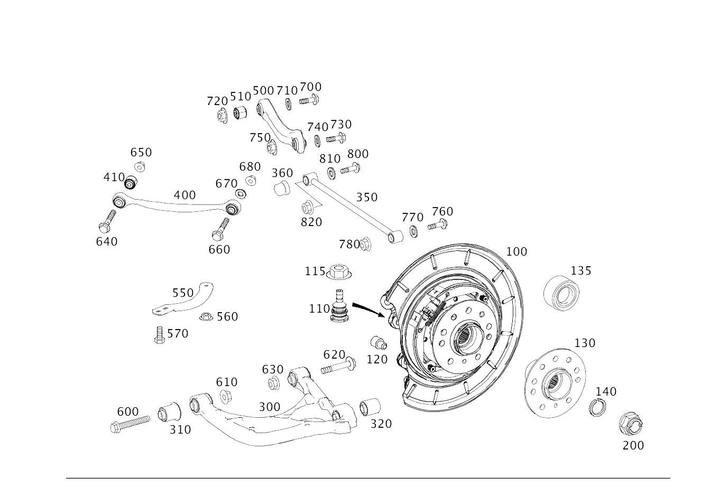

| № | Артикул | Название | Кол. | Примечание | Ограничение |
|---|---|---|---|---|---|
| 100 | A 164 350 07 08 | Кулак подвески | 1 | СЛЕВА | |
| 100 | A 164 350 13 08 | Кулак подвески (WHEEL CARRIER) | 1 | СЛЕВА | |
| 100 | A 164 350 08 08 | Кулак подвески | 1 | СПРАВА | |
| 100 | A 164 350 14 08 | Кулак подвески (WHEEL CARRIER) | 1 | СПРАВА | |
| 110 | A 164 352 01 27 | - Ремк-т опорного шарнира | 2 | РЕМКОМПЛЕКТ [414] СТАРУЮ ДЕТАЛЬ УСТАНАВЛИВАТЬ БОЛЬШЕ НЕ РАЗРЕШАЕТСЯ | |
| 110 | A 164 352 03 27 | - Ремк-т опорного шарнира (REPAIR KIT, SUPPOR. JOINT) | 2 | РЕМКОМПЛЕКТ | |
| 115 | N 000000 005275 | - Гайка | 2 | НЕСУЩ. РЫЧАГ НА ПОПЕРЕЧ.РЫЧАГЕ | |
| 120 | A 164 427 00 74 | - Палец (PIN) | 4 | УПОР | |
| 130 | A 164 356 01 01 | - Ступица колеса | 2 | СЗАДИ | -(M156+M63) |
| 130 | A 164 356 02 01 | - Ступица колеса (WHEEL HUB) | 2 | СЗАДИ | -(M156+M63) |
| 135 | A 164 981 04 06 | - Упорный шарикоподшипник (ANGULAR-CONTACT BALL BRG.) | 2 | ОПОРА КОЛЕСА СЗАДИ [001176] СМ. WIS [003817] ИСПОЛЬЗОВАТЬ ТАКЖЕ СТУПИЦУ КОЛЕСА | |
| 140 | N 000472 090000 | - Стопорное кольцо (RETAINING RING) | 2 | 90X3 MM | |
| 200 | A 001 990 91 54 | Гайка шестигранная (HEX. NUT W FLANGE + PIECE) | 2 | ВАЛ ЗАДНЕГО МОСТА; M24X1.5 | |
| 300 | A 164 350 19 06 | Поперечный рычаг (TRANSVERSE CONTROL ARM) | 1 | ВНИЗУ СЛЕВА [002067] ВНИМАНИЕ ДО ИДЕНТ. НОМЕРА A 066 712 ТОЛЬКО ПАРНО ЗАМЕНЯТЬ | -(M156+M63) |
| 300 | A 164 350 20 06 | Поперечный рычаг (TRANSVERSE CONTROL ARM) | 1 | СНИЗУ СПРАВА [002067] ВНИМАНИЕ ДО ИДЕНТ. НОМЕРА A 066 712 ТОЛЬКО ПАРНО ЗАМЕНЯТЬ | -(M156+M63) |
| 310 | A 164 352 01 65 | - Резиновая опора (RUBBER BUSHING) | 4 | ПОПЕРЕЧНЫЙ РЫЧАГ [417] БОЛЬШЕ НЕ ПОСТАВЛЯЕТСЯ, ЗАКАЗЫВАТЬ КОМПЛЕКТ ПОСТАВКИ | |
| 320 | A 164 326 06 81 | - Резиновая опора (RUBBER BUSHING) | 2 | ПОПЕРЕЧНЫЙ РЫЧАГ | |
| 320 | A 166 326 02 81 | - Элепент подш., эл. (BEARING ELEMENT, ELASTOM.) | 2 | ПОПЕРЕЧНЫЙ РЫЧАГ | |
| 350 | A 164 350 00 53 | Поперечная рулевая тяга | 2 | ЛЕВЫЙ И ПРАВЫЙ | |
| 350 | A 166 350 00 53 | Поперечная рулевая тяга (TIE ROD) | 2 | ЛЕВЫЙ И ПРАВЫЙ | |
| 360 | A 164 352 00 59 | Защитный колпачок (PROTECTIVE CAP) | 2 | ||
| 400 | A 164 350 14 06 | Рычаг подвески (HANDLE BAR) | 2 | СВЕРХУ СПЕРЕДИ | |
| 410 | A 166 353 19 00 | - Элепент подш., эл. (BEARING ELEMENT, ELASTOM.) | 2 | РАСТЯЖКА (ЛЕВ. И ПРАВ.) | |
| 500 | A 164 350 13 06 | Рычаг подвески (HANDLE BAR) | 1 | СЗАДИ СЛЕВА | |
| 500 | A 164 350 16 06 | Рычаг подвески (HANDLE BAR) | 1 | СЗАДИ СПРАВА | |
| 510 | A 166 353 19 00 | - Элепент подш., эл. (BEARING ELEMENT, ELASTOM.) | 2 | РАСТЯЖКА (ЛЕВ. И ПРАВ.) | |
| 550 | A 251 351 01 96 | Распорка (STRUT) | 1 | СЛЕВА | -413 |
| 550 | A 251 351 02 96 | Распорка (STRUT) | 1 | СПРАВА | -413 |
| 560 | N 000000 005268 | Гайка (NUT) | 6 | КРЕПЛЕНИЕ РАСПОРКИ | |
| 570 | N 910143 010011 | Винт с 6-гр. глвк (HEXALOBULAR SCREW) | 2 | КРЕПЛЕНИЕ РАСПОРКИ; M10X20\-10.9 | |
| 570 | N 910105 010009 | Винт с 6-гранной головкой (HEXAGON HEAD BOLT) | 2 | КРЕПЛЕНИЕ РАСПОРКИ; M10X25 | |
| 600 | N 000000 004028 | Винт с 6-гранной головкой (HEXAGON HEAD BOLT) | 2 | ПОПЕРЕЧН. РЫЧАГ НА РАМЕ, СПЕРЕДИ [414] СТАРУЮ ДЕТАЛЬ УСТАНАВЛИВАТЬ БОЛЬШЕ НЕ РАЗРЕШАЕТСЯ | |
| 600 | N 000000 002353 | Винт с 6-гранной головкой (HEXAGON HEAD BOLT) | 2 | ПОПЕРЕЧН. РЫЧАГ НА РАМЕ, СПЕРЕДИ; M14X95 | |
| 610 | N 000000 005307 | Гайка (NUT) | 2 | ПОПЕРЕЧН. РЫЧАГ НА РАМЕ, СПЕРЕДИ; M14X1.5\-10 [414] СТАРУЮ ДЕТАЛЬ УСТАНАВЛИВАТЬ БОЛЬШЕ НЕ РАЗРЕШАЕТСЯ | |
| 610 | N 000000 003277 | Гайка (NUT) | 2 | ПОПЕРЕЧН. РЫЧАГ НА РАМЕ, СПЕРЕДИ; M14X1.5 | |
| 620 | N 000000 004020 | Винт с 6-гранной головкой (HEXAGON HEAD BOLT) | 1 | ПОПЕРЕЧН. РЫЧАГ НА РАМЕ, СЗАДИ; 14X100 [414] СТАРУЮ ДЕТАЛЬ УСТАНАВЛИВАТЬ БОЛЬШЕ НЕ РАЗРЕШАЕТСЯ | |
| 620 | N 910105 014018 | Винт с 6-гранной головкой (HEXAGON HEAD BOLT) | 1 | ПОПЕРЕЧН. РЫЧАГ НА РАМЕ, СЗАДИ; M14X1,5X100\-10.9 | |
| 620 | N 000000 004028 | Винт с 6-гранной головкой (HEXAGON HEAD BOLT) | 1 | ПОПЕРЕЧН. РЫЧАГ НА РАМЕ, СЗАДИ [414] СТАРУЮ ДЕТАЛЬ УСТАНАВЛИВАТЬ БОЛЬШЕ НЕ РАЗРЕШАЕТСЯ | |
| 620 | N 000000 002353 | Винт с 6-гранной головкой (HEXAGON HEAD BOLT) | 1 | ПОПЕРЕЧН. РЫЧАГ НА РАМЕ, СЗАДИ; M14X95 | |
| 630 | N 000000 005307 | Гайка (NUT) | 2 | ПОПЕРЕЧН. РЫЧАГ НА РАМЕ, СЗАДИ; M14X1.5\-10 [414] СТАРУЮ ДЕТАЛЬ УСТАНАВЛИВАТЬ БОЛЬШЕ НЕ РАЗРЕШАЕТСЯ | |
| 630 | N 000000 003277 | Гайка (NUT) | 2 | ПОПЕРЕЧН. РЫЧАГ НА РАМЕ, СЗАДИ; M14X1.5 | |
| 640 | N 000000 004029 | Винт с 6-гранной головкой (HEXAGON HEAD BOLT) | 2 | ПРОДОЛЬНЫЙ РЫЧАГ К КУЛАКУ ЗАДНЕЙ ПОДВЕСКИ [414] СТАРУЮ ДЕТАЛЬ УСТАНАВЛИВАТЬ БОЛЬШЕ НЕ РАЗРЕШАЕТСЯ | |
| 640 | N 910105 012011 | Винт с 6-гранной головкой (HEXAGON HEAD BOLT) | 2 | ПРОДОЛЬНЫЙ РЫЧАГ К КУЛАКУ ЗАДНЕЙ ПОДВЕСКИ; M12X1,5X60 | |
| 650 | N 000000 005306 | Гайка (NUT) | 2 | ПРОДОЛЬНЫЙ РЫЧАГ К КУЛАКУ ЗАДНЕЙ ПОДВЕСКИ; M12X1.5\-10 [414] СТАРУЮ ДЕТАЛЬ УСТАНАВЛИВАТЬ БОЛЬШЕ НЕ РАЗРЕШАЕТСЯ | |
| 650 | N 000000 003276 | Гайка (NUT) | 2 | ПРОДОЛЬНЫЙ РЫЧАГ К КУЛАКУ ЗАДНЕЙ ПОДВЕСКИ; M12X1.5 | |
| 660 | N 000000 004033 | Винт с 6-гранной головкой (HEXAGON HEAD BOLT) | 2 | ПРОДОЛЬНЫЙ РЫЧАГ К КУЛАКУ ПОДВЕСКИ [402] БОЛЬШЕ НЕ ПОСТАВЛЯЕТСЯ [414] СТАРУЮ ДЕТАЛЬ УСТАНАВЛИВАТЬ БОЛЬШЕ НЕ РАЗРЕШАЕТСЯ | |
| 660 | N 000000 003840 | Винт с 6-гранной головкой (HEXAGON HEAD BOLT) | 2 | ПРОДОЛЬНЫЙ РЫЧАГ К КУЛАКУ ПОДВЕСКИ; M12X1,5X85 | |
| 670 | A 140 357 09 75 | Диск (WINDOW) | 2 | ПРОДОЛЬНЫЙ РЫЧАГ К КУЛАКУ ПОДВЕСКИ | |
| 680 | N 000000 005306 | Гайка (NUT) | 2 | ПРОДОЛЬНЫЙ РЫЧАГ К КУЛАКУ ПОДВЕСКИ; M12X1.5\-10 [414] СТАРУЮ ДЕТАЛЬ УСТАНАВЛИВАТЬ БОЛЬШЕ НЕ РАЗРЕШАЕТСЯ | |
| 680 | N 000000 003276 | Гайка (NUT) | 2 | ПРОДОЛЬНЫЙ РЫЧАГ К КУЛАКУ ПОДВЕСКИ; M12X1.5 | |
| 700 | A 000 990 64 00 | Винт с 6-гранной головкой (HEXAGON HEAD SCREW) | 2 | ВЕРХНЯЯ ПОПЕРЕЧНАЯ ТЯГА К БАЛКЕ ЗАДНЕГО МОСТА [001176] СМ. WIS [414] СТАРУЮ ДЕТАЛЬ УСТАНАВЛИВАТЬ БОЛЬШЕ НЕ РАЗРЕШАЕТСЯ | |
| 700 | A 002 990 39 20 | Эксцентриковый болт (ECCENTRIC SCREW) | 2 | ВЕРХНЯЯ ПОПЕРЕЧНАЯ ТЯГА К БАЛКЕ ЗАДНЕГО МОСТА | |
| 710 | A 000 352 01 76 | Эксцентрик (ECCENTRIC) | 2 | ВЕРХНЯЯ ПОПЕРЕЧНАЯ ТЯГА К БАЛКЕ ЗАДНЕГО МОСТА | |
| 710 | A 000 352 00 76 | Диск (WINDOW) | 2 | ВЕРХНЯЯ ПОПЕРЕЧНАЯ ТЯГА К БАЛКЕ ЗАДНЕГО МОСТА | |
| 720 | N 000000 005306 | Гайка (NUT) | 2 | ВЕРХНЯЯ ПОПЕРЕЧНАЯ ТЯГА К БАЛКЕ ЗАДНЕГО МОСТА; M12X1.5\-10 [414] СТАРУЮ ДЕТАЛЬ УСТАНАВЛИВАТЬ БОЛЬШЕ НЕ РАЗРЕШАЕТСЯ | |
| 720 | N 000000 003276 | Гайка (NUT) | 2 | ВЕРХНЯЯ ПОПЕРЕЧНАЯ ТЯГА К БАЛКЕ ЗАДНЕГО МОСТА; M12X1.5 | |
| 730 | N 000000 004030 | Винт с 6-гранной головкой (HEXAGON HEAD BOLT) | 2 | ВЕРХНЯЯ ПОПЕРЕЧНАЯ ТЯГА К КУЛАКУ ПОДВЕСКИ | |
| 730 | N 000000 003864 | Винт с 6-гранной головкой (HEXAGON HEAD BOLT) | 2 | ВЕРХНЯЯ ПОПЕРЕЧНАЯ ТЯГА К КУЛАКУ ПОДВЕСКИ; M12X1,5X95 | |
| 740 | A 140 357 09 75 | Диск (WINDOW) | 2 | ВЕРХНЯЯ ПОПЕРЕЧНАЯ ТЯГА К КУЛАКУ ПОДВЕСКИ | |
| 750 | N 000000 005306 | Гайка (NUT) | 2 | ВЕРХНЯЯ ПОПЕРЕЧНАЯ ТЯГА К КУЛАКУ ПОДВЕСКИ; M12X1.5\-10 [414] СТАРУЮ ДЕТАЛЬ УСТАНАВЛИВАТЬ БОЛЬШЕ НЕ РАЗРЕШАЕТСЯ | |
| 750 | N 000000 003276 | Гайка (NUT) | 2 | ВЕРХНЯЯ ПОПЕРЕЧНАЯ ТЯГА К КУЛАКУ ПОДВЕСКИ; M12X1.5 | |
| 760 | N 000000 004033 | Винт с 6-гранной головкой (HEXAGON HEAD BOLT) | 2 | ТЯГА СХОЖДЕНИЯ К КУЛАКУ ПОДВЕСКИ [402] БОЛЬШЕ НЕ ПОСТАВЛЯЕТСЯ [414] СТАРУЮ ДЕТАЛЬ УСТАНАВЛИВАТЬ БОЛЬШЕ НЕ РАЗРЕШАЕТСЯ | |
| 760 | N 000000 003840 | Винт с 6-гранной головкой (HEXAGON HEAD BOLT) | 2 | ТЯГА СХОЖДЕНИЯ К КУЛАКУ ПОДВЕСКИ; M12X1,5X85 | |
| 770 | A 140 357 09 75 | Диск (WINDOW) | 2 | ТЯГА СХОЖДЕНИЯ К КУЛАКУ ПОДВЕСКИ | |
| 780 | N 000000 005306 | Гайка (NUT) | 2 | ТЯГА СХОЖДЕНИЯ К КУЛАКУ ПОДВЕСКИ; M12X1.5\-10 [414] СТАРУЮ ДЕТАЛЬ УСТАНАВЛИВАТЬ БОЛЬШЕ НЕ РАЗРЕШАЕТСЯ | |
| 780 | N 000000 003276 | Гайка (NUT) | 2 | ТЯГА СХОЖДЕНИЯ К КУЛАКУ ПОДВЕСКИ; M12X1.5 | |
| 800 | A 000 990 63 00 | Винт с 6-гранной головкой (HEXAGON HEAD SCREW) | 2 | ТЯГА СХОЖДЕНИЯ К БАЛКЕ ЗАДНЕГО МОСТА [414] СТАРУЮ ДЕТАЛЬ УСТАНАВЛИВАТЬ БОЛЬШЕ НЕ РАЗРЕШАЕТСЯ | |
| 800 | A 002 990 38 20 | Эксцентриковый болт (ECCENTRIC SCREW) | 2 | ТЯГА СХОЖДЕНИЯ К БАЛКЕ ЗАДНЕГО МОСТА; M12X1,5,78 | |
| 810 | A 000 352 02 76 | Эксцентрик (ECCENTRIC) | 2 | ТЯГА СХОЖДЕНИЯ К БАЛКЕ ЗАДНЕГО МОСТА [414] СТАРУЮ ДЕТАЛЬ УСТАНАВЛИВАТЬ БОЛЬШЕ НЕ РАЗРЕШАЕТСЯ | |
| 810 | A 000 352 00 76 | Диск (WINDOW) | 2 | ТЯГА СХОЖДЕНИЯ К БАЛКЕ ЗАДНЕГО МОСТА | |
| 820 | N 000000 005306 | Гайка (NUT) | 2 | ТЯГА СХОЖДЕНИЯ К БАЛКЕ ЗАДНЕГО МОСТА; M12X1.5\-10 [414] СТАРУЮ ДЕТАЛЬ УСТАНАВЛИВАТЬ БОЛЬШЕ НЕ РАЗРЕШАЕТСЯ | |
| 820 | N 000000 003276 | Гайка (NUT) | 2 | ТЯГА СХОЖДЕНИЯ К БАЛКЕ ЗАДНЕГО МОСТА; M12X1.5 |
Позиций: 72 · подписано на схемах: 72 · колесо — плавный зум в курсор, перетаскивание — пан, двойной клик — зум, клик по артикулу — скопировать.